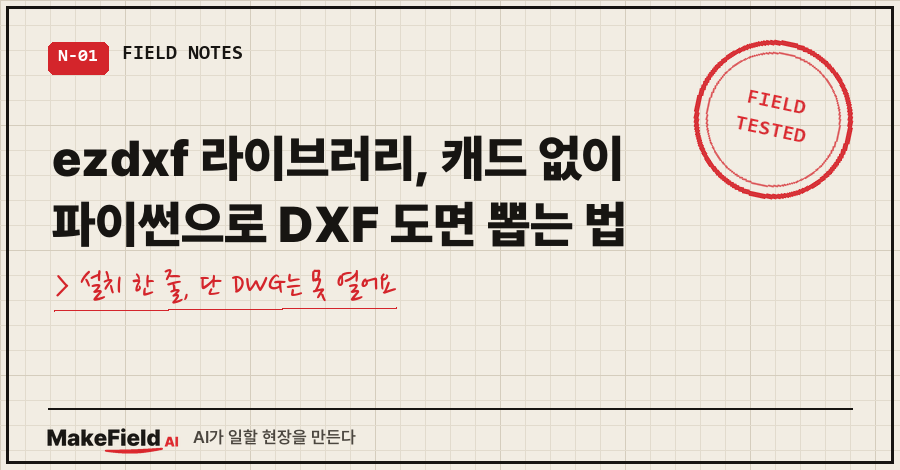
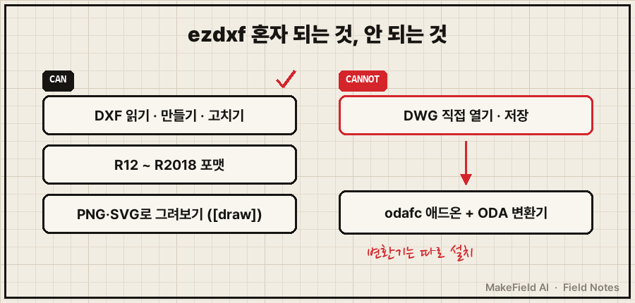
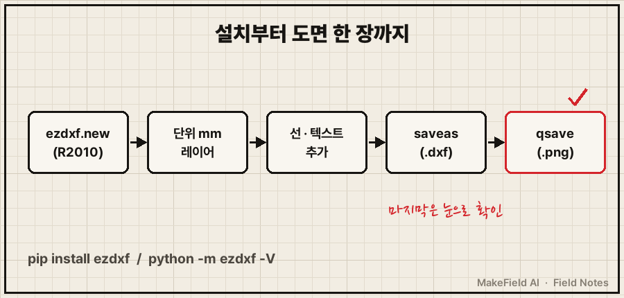
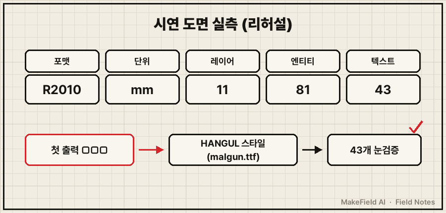

ezdxf 라이브러리는 AutoCAD 없이 파이썬으로 DXF 도면을 읽고, 만들고, 고치는 MIT 라이선스 오픈소스예요.
설치는 pip install ezdxf 한 줄이고, 공식 문서 기준 Python 3.11 이상이 필요해요(2026년 11월 확인).
대신 DWG 파일은 직접 못 다뤄요. 이건 처음에 알고 시작해야 덜 헤매요.
저는 이 라이브러리를 첫 유료 강의 준비에서 썼어요.
라이브 시연에서 AI한테 말로 시켜 감지기 외형도 DXF를 그 자리에서 뽑았거든요.
그 준비 과정은 AI 강의 발표자료 글에 따로 적었고, 이 글은 그때 쓴 도구 자체만 정리할게요.
제조 현장에서 자동화 설비를 다뤄 온 엔지니어 입장에서, 처음 쓰는 분이 걸릴 자리 위주로요.
1. 처음 쓰면 이런 화면부터 봐요
ezdxf를 처음 만지면 이런 화면을 만나기 쉬워요.
ModuleNotFoundError: No module named 'ezdxf' ← 설치 전에 import
Not a DXF file or a generic I/O error. ← DWG를 readfile에 넣음(공식 튜토리얼 예제의 IOError 메시지)
정면도 표제란 : □□□ □□□ ← 한글 텍스트가 네모첫 줄은 파이썬이 모듈을 못 찾을 때 내는 표준 예외예요(→ https://docs.python.org/3/library/exceptions.html#ModuleNotFoundError).
세 번째 네모는 제가 리허설에서 직접 본 화면이에요. 텍스트 43개가 전부 네모였어요.
2. ezdxf는 'DXF 전용' 라이브러리라서 그래요
공식 문서는 ezdxf를 "Autodesk가 만든 DXF 포맷의 파이썬 인터페이스"라고 정의해요.
지원 범위는 R12부터 R2018 포맷까지이고, 문서에 이렇게 못박혀 있어요.
ezdxf is not a CAD file format converter:
ezdxf can not convert DXF files to other CAD formats such as DWG.(→ https://ezdxf.readthedocs.io/en/stable/introduction.html)
그래서 DWG를 넣으면 막히는 거고, 한글 네모는 DXF 기본 폰트에 한글 글자가 없어서 생겨요.

정리하면 ezdxf가 하는 일과 못 하는 일은 이래요.
| 구분 | ezdxf 혼자 | 필요한 것 |
|---|---|---|
| DXF 읽기·만들기·고치기 | 가능 | pip install ezdxf |
| PNG·SVG로 그려보기 | 가능 | ezdxf[draw] 추가 패키지 |
| DWG 열기·저장 | 불가 | odafc 애드온 + ODA File Converter(사용자가 따로 설치) |
3. 설치부터 도면 한 장까지 4단계
① 설치와 버전 확인
pip install ezdxf
pip install ezdxf[draw] # 그림으로 확인하려면 (Matplotlib·PySide6 등)
python -m ezdxf -V # 버전·설치 위치·파이썬 버전 출력② 최소 도면 코드 — 공식 문서 예제를 이어 붙여 줄인 거예요.
import ezdxf
from ezdxf import units
doc = ezdxf.new("R2010", setup=True) # 포맷 지정 + 기본 스타일
doc.units = units.MM # 도면 단위 mm
doc.layers.add("OUTLINE")
doc.styles.add("HANGUL", font="malgun.ttf")
msp = doc.modelspace()
msp.add_line((0, 0), (100, 0), dxfattribs={"layer": "OUTLINE"})
msp.add_text("정면도", height=5,
dxfattribs={"style": "HANGUL"}).set_placement((0, 10))
doc.saveas("sample.dxf")③ 그림으로 뽑아 눈으로 보기 — CAD가 없어도 돼요.
from ezdxf.addons.drawing import matplotlib
matplotlib.qsave(doc.modelspace(), "sample.png")④ DWG가 꼭 필요하면 ODA File Converter를 먼저 설치하고 ezdxf의 odafc 애드온으로 변환해요. ezdxf 혼자선 안 돼요.

4. 제 시연 도면은 이렇게 확인했어요
리허설 때 AI가 짠 스크립트로 나온 도면은 R2010 포맷, mm 단위, 11개 레이어에 81개 엔티티였어요.
정면도, 측면도, 감지범위 평면도, 치수, 표제란까지 들어갔고요.
근데 첫 출력에서 한글이 전부 네모였어요.
위 ②번 코드의 doc.styles.add("HANGUL", font="malgun.ttf") 한 줄이 그때 넣은 처방이에요.
모든 텍스트와 치수에 그 스타일을 물리고,
다시 뽑고,
PNG로 렌더해서 텍스트 43개를 눈으로 확인했어요.
코드가 돌았다는 것과 도면이 맞다는 건 다른 얘기더라고요. 그래서 확인 기준을 세 개로 정해뒀어요.
python -m ezdxf -V가 버전을 찍는다- 저장한 DXF를
ezdxf.readfile()로 다시 열어도 에러가 없다 - PNG로 뽑은 그림에서 한글·치수를 직접 눈으로 본다

5. 같은 증상, 다른 경우
- 한글 네모가 스타일을 넣어도 안 잡히면 → 파이썬으로 만든 DXF 도면 한글 깨짐, 인코딩 아니라 폰트 문제였어요에 원인 판별법과 영어 폴백까지 있어요.
- 도면 말고 PPT를 파이썬으로 뽑다 표가 잘린다면 → python-pptx 표 잘림 글이 같은 '뽑고 눈으로 보기' 계열이에요.
- 이 도면을 시연에 쓴 맥락은 → AI 강의 발표자료, 41장을 63장으로 갈아엎은 이유
자주 묻는 질문
Q. ezdxf 라이브러리, 회사 업무에 무료로 써도 되나요?
공식 문서 표현으로 "매우 관대한 MIT 라이선스"예요. 다만 회사 반입 기준은 사내 규정을 따로 확인하세요.
Q. ezdxf로 DWG 파일을 열 수 있나요?
혼자서는 못 열어요. ODA File Converter를 직접 설치한 뒤 odafc 애드온의 readfile을 쓰면, DWG를 임시 DXF로 바꿔서 불러와요.
Q. 오토캐드 없이 결과를 어떻게 보나요?
ezdxf[draw]를 깔면 ezdxf view 파일.dxf로 바로 보거나, 위 qsave로 PNG를 뽑을 수 있어요. 저는 PNG로 뽑아 텍스트를 하나씩 세는 쪽을 택했어요.
AI한테 도면을 맡겨보고 싶다면 ezdxf가 제일 가벼운 출발점이에요. 단, 뽑은 다음 한 번은 꼭 그림으로 열어보세요.
도면·코드를 AI와 같이 굴리는 현장 기록은 makefield.ai에도 모아두고 있습니다.
출처
- ezdxf 공식 문서 Introduction — DXF 파이썬 인터페이스, R12~R2018, MIT, Python 3.11 이상, DWG 변환 불가 → https://ezdxf.readthedocs.io/en/stable/introduction.html
- ezdxf Setup — pip install, [draw] 추가 패키지,
python -m ezdxf -V→ https://ezdxf.readthedocs.io/en/stable/setup.html - ezdxf Usage for Beginners — new(), layers.add, add_line, saveas, readfile → https://ezdxf.readthedocs.io/en/stable/usage_for_beginners.html
- ezdxf Units — doc.units, units.MM($INSUNITS 4) → https://ezdxf.readthedocs.io/en/stable/concepts/units.html
- ezdxf Text 튜토리얼 / Style 테이블 — add_text·set_placement, styles.add(font=) → https://ezdxf.readthedocs.io/en/stable/tutorials/text.html , https://ezdxf.readthedocs.io/en/stable/tables/style_table_entry.html
- ezdxf Getting Data 튜토리얼 — readfile 예외 처리 예제(IOError 메시지) → https://ezdxf.readthedocs.io/en/stable/tutorials/getting_data.html
- ezdxf Drawing 애드온 / Launcher — qsave, ezdxf view·draw → https://ezdxf.readthedocs.io/en/stable/addons/drawing.html , https://ezdxf.readthedocs.io/en/stable/launcher.html
- ezdxf ODA File Converter 애드온 — DWG readfile·export_dwg, 별도 설치 → https://ezdxf.readthedocs.io/en/stable/addons/odafc.html
- Python 공식 문서 — ModuleNotFoundError → https://docs.python.org/3/library/exceptions.html#ModuleNotFoundError
태그: #ezdxf라이브러리 #ezdxf #ezdxf설치 #파이썬DXF #DXF만들기 #파이썬도면 #도면자동화 #CAD자동화 #DXF파일 #DWG변환 #ODAFileConverter #오토캐드없이 #AI도면생성 #파이썬자동화 #MakeFieldAI